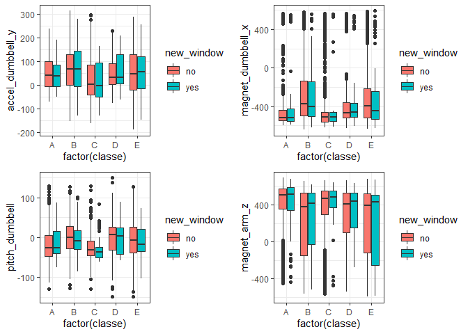

Load All The Libraries
library(ggplot2)
library(caret)
library(imputeTS)
library(e1071)
library(gridExtra)
library(dplyr)Import the Data
train_url <- 'https://d396qusza40orc.cloudfront.net/predmachlearn/pml-training.csv'
test_url <- 'https://d396qusza40orc.cloudfront.net/predmachlearn/pml-testing.csv'
train = read.csv(train_url)
test = read.csv(test_url)
train = train[,-1]
test = test[,-1]
dim(train)## [1] 19622 159Impute cvtd_timestamp variable
train$cvtd_timestamp = as.POSIXlt(train$cvtd_timestamp, format = '%m/%d/%Y %H:%M')
test$cvtd_timestamp = as.POSIXlt(test$cvtd_timestamp, format = '%m/%d/%Y %H:%M')
train$cvtd_timestamp <- as.numeric(train$cvtd_timestamp)
test$cvtd_timestamp <- as.numeric(test$cvtd_timestamp)
train$cvtd_timestamp <- na_interpolation(train$cvtd_timestamp)
test$cvtd_timestamp <- na_interpolation(test$cvtd_timestamp)
str(train$cvtd_timestamp)## num [1:19622] 1.31e+09 1.31e+09 1.31e+09 1.31e+09 1.31e+09 ...Convert Categorical Values to Factor and remove username column
train$new_window = as.factor(train$new_window)
test$new_window = as.factor(test$new_window)
train$classe = as.factor(train$classe)
train = train[,-1]
test = test[,-1]
str(train$new_window)## Factor w/ 2 levels "no","yes": 1 1 1 1 1 1 1 1 1 1 ...Drop the Columns that contain mostly empty or null values
empty = sapply(train[, -4], function(x) mean(x==''))
empty = sort(empty[empty > 0.5])
remove_empty = names(empty)
train = train[, ! names(train) %in% remove_empty]
test = test[, ! names(test) %in% remove_empty]
nan <-sapply(train[, -4], function(x) mean(is.na(x)))
nan <-nan[nan > 0.5]
remove_nan <- names(nan)
train = train[, !names(train) %in% remove_nan]
test = test[, !names(test) %in% remove_nan]
dim(train)## [1] 19622 58Explore some of the variables visually.
g <- ggplot(train, aes(x=factor(classe), y=accel_dumbbell_y)) +
geom_boxplot(aes(fill=new_window)) + theme_bw()
g2 <- ggplot(train, aes(x=factor(classe), y=magnet_dumbbell_x)) +
geom_boxplot(aes(fill=new_window)) + theme_bw()
g3 <- ggplot(train, aes(x=factor(classe), y=pitch_dumbbell)) +
geom_boxplot(aes(fill=new_window)) + theme_bw()
g4 <- ggplot(train, aes(x=factor(classe), y=magnet_arm_z)) +
geom_boxplot(aes(fill=new_window)) + theme_bw()
grid.arrange(g, g2, g3,g4, nrow=2, ncol=2)
Preprocess
#convert new_window into dummy variable
train$new_window <-ifelse(train$new_window=='yes', 1,0)
test$new_window <- ifelse(test$new_window=='yes', 1, 0)
#scale and center the data
preprocessParams <- preProcess(train[,-58], method=c("center", "scale"))
train[,-58] <- predict(preprocessParams, train[,-58])
test[,-58]<- predict(preprocessParams, test[,-58])Split the data set to train and test the model
set.seed(37)
trainIndex <- createDataPartition(train$classe, p = 0.63, list=FALSE)
training <- train[trainIndex,]
testing <- train[-trainIndex,]
print(dim(training))## [1] 12365 58print(dim(testing))## [1] 7257 58Perform 10 fold cross validation and tune SVM model to select the best fit. We get an estimated error of 0.009381124
tuned <- tune.svm(classe ~ . , data=training, gamma = 10^-2,
cost = 10^2, tunecontrol=tune.control(cross=10))
summary(tuned)##
## Error estimation of 'svm' using 10-fold cross validation: 0.009381124tuned$performances## gamma cost error dispersion
## 1 0.01 100 0.009381124 0.002162836svmfit <- tuned$best.modelPredict using test set and evaluate the model’s performance. Here we see that out of sample error is close to the estimated one above
tune.pred <- predict(svmfit, testing[, -58])
confusionMatrix(tune.pred, testing$classe)## Confusion Matrix and Statistics
##
## Reference
## Prediction A B C D E
## A 2062 7 1 0 0
## B 2 1394 6 0 0
## C 0 3 1246 26 1
## D 0 0 13 1162 2
## E 0 0 0 1 1331
##
## Overall Statistics
##
## Accuracy : 0.9915
## 95% CI : (0.9891, 0.9934)
## No Information Rate : 0.2844
## P-Value [Acc > NIR] : < 2.2e-16
##
## Kappa : 0.9892
##
## Mcnemar's Test P-Value : NA
##
## Statistics by Class:
##
## Class: A Class: B Class: C Class: D Class: E
## Sensitivity 0.9990 0.9929 0.9842 0.9773 0.9978
## Specificity 0.9985 0.9986 0.9950 0.9975 0.9998
## Pos Pred Value 0.9961 0.9943 0.9765 0.9873 0.9992
## Neg Pred Value 0.9996 0.9983 0.9967 0.9956 0.9995
## Prevalence 0.2844 0.1935 0.1745 0.1638 0.1838
## Detection Rate 0.2841 0.1921 0.1717 0.1601 0.1834
## Detection Prevalence 0.2852 0.1932 0.1758 0.1622 0.1835
## Balanced Accuracy 0.9987 0.9958 0.9896 0.9874 0.9988